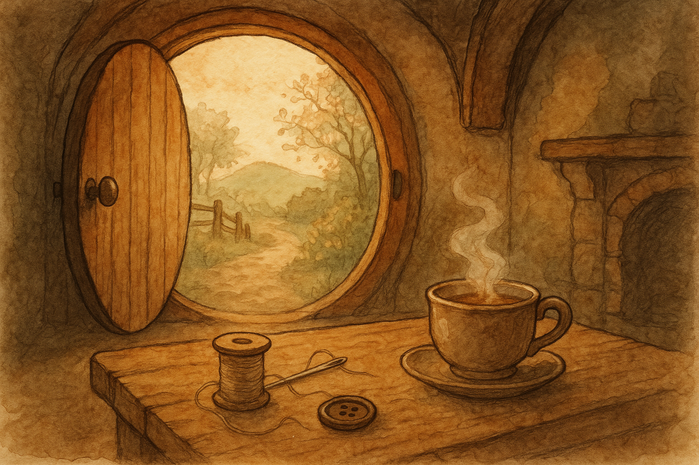

I found a button on the mat this morning — a plain little fellow, innocent as you please — and at once the day felt like it had a proper task in mind. There is something cheering about a small repair in the Shire: it makes the world seem less like a great roaring thing, and more like a jacket you can set right with patience.
I took thread, needle, and tea (always tea), and sat where the first light comes in, pale as milk, through the round window. Each stitch was a quiet promise that I would not be hurried — not by clocks, nor by worries, nor by the grand business of Middle Earth.
When the button was firm again, I held the coat up and thought of that sensible warning: “Never laugh at live dragons.” It is good advice, but so is this: do not scorn the tiny brave things — the first step, the first cup, the first stitch — for they are how even an Unexpected Journey begins.
Filed under: Middle Earth • Written at Bag End